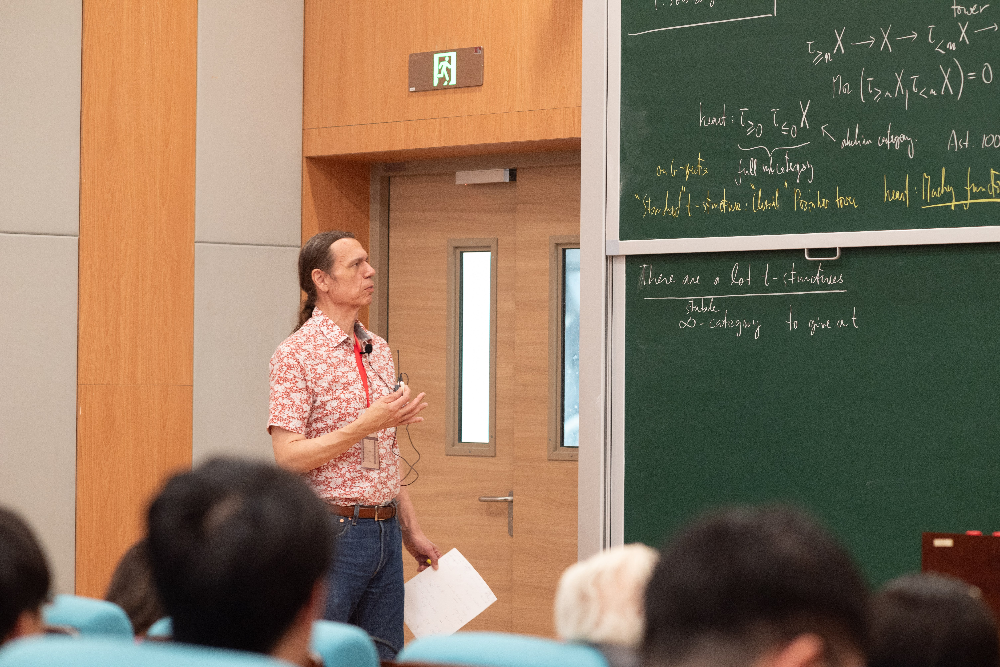

Algebraic topology, especially equivariant stable homotopy theory, Mackey functors, cobordism, motivic homotopy theory
I.Kriz, Y.Lu: On the structure of equivariant formal group laws, Homology Homotopy Appl. 27 (2025), no. 1, 383–402
P.Hu, I.Kriz, P.Somberg: On the equivariant motivic filtration of the topological Hochschild homology of polynomial algebra, arxiv:2205.134279Adv. Math. 412 (2023), Paper No. 108803, 12 pp. P.Hu, I.Kriz, P.Somberg, F.Zou: Equivariant operations in topological Hochschild homology, arxiv:2504.07064, Math. Z. 310 (2025), no. 4, Paper No. 67, 21 pp. P.Hu, I.Kriz, P.Somberg, F.Zou: The Z/p-equivariant dual Steenrod algebra for an odd prime p, arxiv:2205.134279 P.Hu, I.Kriz, P.Somberg, F.Zou: The Z/p-equivariant spectrum BPR for an odd prime p, arxiv:2407.16599P.Hu, I.Kriz, P.Somberg, B.Riley: On Smith-Stong's self-conjugate cobordism challenge
P.Hu, D.Kriz, I.Kriz, P.Somberg: Some remarks on plectic motivic spaces and spectra, Czechoslovak Math. J. 75(150) (2025), no. 2, 585–598
V.Burghradrt, P.Hu, I.Kriz, P.Somberg: Perverse Mackey functors
I.Kriz, B.Roytman: What is an equivariant Adams spectral sequence?
Here are the course notes of some of my recent courses.